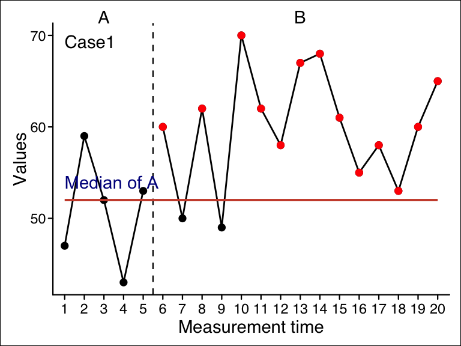
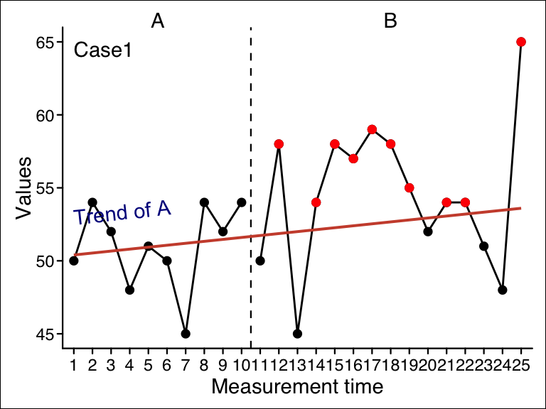

overlap provides a table with some of the most important overlap indices for each case of an scdf. For calculating overlap indicators it is important to know if a decrease or an increase of values is expected between phases. By default overlap assumes an increase in values. If the argument decreasing = TRUE is set, calculation will be based on the assumption of decreasing values.
Overlap measures refer to a comparison of two phases within a single-case data-set. By default, overlap compares the first to the second phase.
9.1.1 Select and recombine phases
The select_phases function call
select_phases(data, A, B, phase_names = “auto”)
The select_phases() function is needed if you like to compare specific phases or even like to combine several phases. select_phases() is designed to work within a pipe structure. So the first argument is an scdf and it returns an scdf.
scdf |>select_phases(A =1, B =3) |> ...
select_phases() has the arguments A and B. Each argument takes a vector with the names or the numbers of the phases to be selected. If you want to compare the first to the third phase you can set select_phases(scdf, 1,3). If the phases of your case are named ‘A’, ‘B’, and ‘C’ you could alternatively set select_phases(scdf, "A","C"). It is also possible to compare a combination of several cases against a combination of other phases. Each of the two list-elements could contain more than one phase which are concatenated with the c command. For example if you have an ABAB-Design and like to compare the two A-phases against the two B-phases select_phases(scdf, c(1,3), c(2,4) ) will do the trick.
(As an alternative approach you can set the phases argument within the overlap() function. This argument takes a list with two elements where the first element defines the phases for the A-phase and the second argument the phases for the B-phase.)
Standardized mean differences can be calculated in various ways. They refer to the difference in the means of two phases divided by a standard deviation. The smd function provides an overview of the most common parameters for each single-case:
smd(exampleAB_score)
Standardized mean differences
Christiano Lionel Neymar
mA 2.70 3.10 2.30
mB 15.35 15.35 15.60
sdA 1.42 1.59 1.49
sdB 2.13 1.60 2.19
sd cohen 1.81 1.60 1.87
sd hedges 1.93 1.60 1.99
Glass' delta 8.92 7.68 8.90
Hedges' g 6.54 7.67 6.68
Hedges' g correction 6.37 7.46 6.50
Hedges' g durlak correction 6.15 7.21 6.28
Cohen's d 6.98 7.67 7.10
The first four rows give the mean and the standard deviation of the two respective phases. sd cohen is the (unweighted) average of the standard deviation of phase A and B: \(\sqrt{\frac{{\text{sdA}^2 + \text{sdB}^2}}{2}}\). sd Hedges is the weighted average of the standard deviation with a correction for degrees of freedom: \(\sqrt{\frac{ (nA - 1) \cdot \text{sdA}^2 + (nB - 1) \cdot \text{sdB}^2 }{ nA + nB - 2 }}\). Hedges' g is the mean difference divided by sd Hedges. Hedges' g correction (\(Hedges' g * (1 - \frac{3}{4n - 9})\)) and Hedges' g durlak correction (\(Hedges' g * (\frac{{n - 3}}{{n - 2.25}} \cdot \sqrt{\frac{{n - 2}}{{n}}})\)) are two approaches of correcting Hedges’ g for small sample sizes. Glass' delta is the mean difference divided by the standard deviation of the A-phase. Cohen's d is the mean difference divided by sd cohen.
The percentage of non-overlapping data (PND) effect size measure was described by Scruggs, Mastropieri, & Casto (1987) . It is the percentage of all data-points of the second phase of a single-case study exceeding the maximum value of the first phase. In case you have a study where you expect a decrease of values in the second phase, PND is calculated as the percentage of data-point of the second phase below the minimum of the first phase.
Illustration of PND. PND is 60% as 9 out of 15 datapoints of phase B are higher than the maximum of phase A
The function pnd provides the PND for each case as well as the mean of all PNDs of that scdf. When you expect decreasing values set decreasing = TRUE. When there are more than two phases or phases are not named A and B, use the phases argument as described at the beginning of this chapter.
pnd(exampleAB)
Percent Non-Overlapping Data
Case PND Total Exceeds
Johanna 100% 15 15
Karolina 86.67% 15 13
Anja 93.33% 15 14
Mean : 93.33 %
The pem function returns the percentage of phase B data exceeding the phase A median. Additionally, a binomial test against a 50/50 distribution is computed. Different measures of central tendency can be addressed for alternative analyses.

Illustration of PEM. PEM is 75% as 13 out of 15 datapoints of phase B are higher than the median of phase A
pem(exampleAB)
Percent Exceeding the Median
Case PEM positives total binom.p
Johanna 100 15 15 3.05e-05
Karolina 100 15 15 3.05e-05
Anja 100 15 15 3.05e-05
Alternative hypothesis: true probability > 50%
9.5 Percentage exceeding the regression trend (PET)
The pet function provides the percentage of phase B data points exceeding the prediction based on the phase A trend. A binomial test against a 50/50 distribution is computed. Furthermore, the percentage of phase B data points exceeding the upper (or lower) 95 percent (default) confidence interval of the predicted progress is computed.
pet(exampleAB)
Percent Exceeding the Trend
Case PET PET CI binom.p
Johanna 100.0 86.7 3.05e-05
Karolina 93.3 0.0 4.88e-04
Anja 100.0 100.0 3.05e-05
Binom.test: alternative hypothesis: true probability > 50%
PET CI: Percent of values greater than upper 95% confidence threshold (single sided)

Illustration of PET. PET is 66.7% as 10 out of 15 datapoints of phase B are higher than the projected trend-line of phase A
The pand function calculates the percentage of all non-overlapping data (Richard I. Parker, Hagan-Burke, & Vannest, 2007), an index to quantify a level increase (or decrease) in performance after the onset of an intervention. The authors emphasize that PAND is designed for application in a multiple case design with a substantial number of measurements, technically at least 20 to 25, but preferably 60 or more. PAND is defined as 100% minus the percentage of data points that need to be removed from either phase in order to ensure nonoverlap between the phases.
Several approaches have been suggested to calculate PAND, leading to potentially different outcomes. In their 2007 paper, Parker and colleagues present an algorithm for computing PAND. The algorithm involves sorting the scores of a time series, including the associated phases, and comparing the resulting phase order with the original phase order using a contingency table. To account for ties, the algorithm includes a randomization process where ties are randomly assigned to one of the two phases. Consequently, executing the algorithm multiple times could yield different results. It is important to note that this algorithm does not produce the same results as the PAND definition provided earlier in the same paper. However, it offers the advantage of allowing the calculation of an effect size measure phi, and the application of statistical tests for frequency distributions. phi equals Pearsons r for dichotomous data. Thus, phi-Square is the amount of explained variance.
Pustejovsky (2019) presented a mathematical formulation of Parker’s original definition for comparing two phases of a single case:
This formulation provides accurate results for PAND, but the original definition has the drawback of an unknown distribution under the null hypothesis, making a statistical test difficult.
The pand() function enables the calculation of PAND using both methods. The first approach (method = "sort") follows the algorithm described above, with the exclusion of randomization before sorting to avoid ambiguity. It calculates a phi measure and provides the results of a chi-squared test and a Fisher exact test. The second approach (method = "minimum") applies the aforementioned formula. For a multiple case design, overlaps are calculated for each case, summed, and then divided by the total number of measurements. No statistical test is conducted for this method.
pand(Parker2007)
Percentage of all non-overlapping data
Method: sort
PAND = 85.7%
Φ = 0.713 ; Φ² = 0.508
28 measurements (13 Phase A, 15 Phase B) in 3 cases
Overlapping data: n = 4 ; percentage = 14.3
2 x 2 Matrix of percentages
A B total
A 39.3 7.1 46.4
B 7.1 46.4 53.6
total 46.4 53.6 100.0
2 x 2 Matrix of counts
A B total
A 11 2 13
B 2 13 15
total 13 15 28
Chi-Squared test:
X² = 14.227, df = 1, p = 0.000
Fisher exact test:
Odds ratio = 29.007, p = 0.000
pand(Parker2007, method ="minimum")
Percentage of all non-overlapping data
Method: minimum
PAND = 85.7%
28 measurements (13 Phase A, 15 Phase B) in 3 cases
Overlapping data: n = 4 ; percentage = 14.3
The original procedure for computing PAND does not account for ambivalent datapoints (ties). The newer NAP overcomes this problem and has better precision-power (Richard I. Parker, Vannest, & Davis, 2011a).
The nap function calculates the nonoverlap of all pairs (Richard I. Parker & Vannest, 2009). NAP summarizes the overlap between all pairs of phase A and phase B data points. Therefore, every single measurement of phase A is compared to all measurements in phase B, resuting in \(n_{Phase A} \times n_{Phase B}\) pairs. If an increase in phase B values is expected, a non-overlapping pair will have a higher phase B data point. The NAP is equal to the number of pairs showing no overlap / number of pairs. Since NAP has values between 0 and 100% where 50% is no effect, a rescaled NAP (ranging between -100 and 100%, where 0% is no effect) has been proposed. NAP is equivalent to the U-test and the Wilcoxon rank sum test. Therefore, a Wilcoxon signed rank sum test is conducted and reported for each case. Additionally, effect sizes d and R-squared are reported according to Parker and colleagues.
nap(exampleAB)
Nonoverlap of All Pairs
Case NAP NAP Rescaled w p d R²
Johanna 100 100 0.0 <.001 3.5 0.75
Karolina 97 93 2.5 <.01 2.6 0.62
Anja 98 96 1.5 <.001 2.8 0.66
The adaptation of the improvement rate difference for single-case phase comparisons was developed by Richard I. Parker, Vannest, & Brown (2009). A variation called robust improvement rate difference was proposed by Richard I. Parker et al. (2011a). The ird() function calculates the robust improvement rate difference. It follows the formula suggested by Pustejovsky (2019). For a multiple case design, IRD is based on the overall improvement rate of all cases which is the average of the IRDs for each case.
The Tau-U statistic has been proposed by Richard I. Parker, Vannest, Davis, & Sauber (2011b) and is one of the more broadly used approach for reporting effect sizes of single case data. Unfortunately, various and ambiguous implementations of Tau-U exist (Brossart, Laird, & Armstrong, 2018; Pustejovsky, 2016). The tau_u function tries to cover several of these implementation. It takes an scdf and returns Tau-U calculations for each single-case within that file. Additionally, an overall Tau-U value is calculated for all cases based on a meta-analysis.
9.9.1 Variations of Tau-U
Several arguments can be set to define how Tau-U should be calculated. When setting the argument method = "parker", Tau-U is according to Richard I. Parker et al. (2011b). However, this procedure could lead to Tau-U values above 1 and below -1 which are difficult to interpret. Additionally, this method uses Kendall’s Tau A, which does not correct for ties, and no continuity correct is calculated. The default setting method = "complete" applies a correction that keeps the values within the -1 to 1 range. method = "tarlow" applies a variation that has been implemented by Tarlow (2017) . This method is similar to "complete" but is based on Tau A rather than Tau B and includes a continuity correction.
Note that the arguments tau_method ("a" or "b") and continuity_correction (TRUE or FALSE) only function with method = "complete".
My recommendation is to use method = "complete" in combination with the defaults tau_method = "b" and continuity_correction = TRUE for the most appropriate results.
Here is an example with setting that reconstruct the values from the original example in Richard I. Parker, Vannest, Davis, & Sauber (2011c) :
tau_u(Parker2011, method ="parker")
Tau-U
Method: parker
Applied Kendall's Tau-a
95% CIs for tau are reported.
CI method: z
Case: Case1
Tau CI lower CI upper SD_S Z p
A vs. B 0.80 0.29 0.96 8.16 2.00 .05
A vs. B - Trend A 0.65 -0.02 0.92 8.48 1.53 .13
A vs. B + Trend B 0.77 0.21 0.95 8.91 2.58 <.05
A vs. B + Trend B - Trend A 0.56 -0.17 0.89 9.35 2.14 <.05
Tau-U
Method: parker
Applied Kendall's Tau-a
95% CIs for tau are reported.
CI method: z
Case: Johanna
Tau CI lower CI upper SD_S Z p
A vs. B 1.00 NaN NaN 22.91 3.27 <.001
A vs. B - Trend A 1.00 NaN NaN 23.26 3.22 <.001
A vs. B + Trend B 0.81 0.56 0.92 30.53 4.75 <.001
A vs. B + Trend B - Trend A 0.76 0.48 0.90 30.81 4.71 <.001
Another online calculator created by Rumen Manolov is available at https://manolov.shinyapps.io/Overlap/. It uses an R code developed by Kevin Tarlow to calculate Tau-U. This setting will replicate the results of this approach:
tau_u(exampleAB$Johanna, method ="tarlow")
Tau-U
Method: tarlow
Applied Kendall's Tau-a
95% CIs for tau are reported.
CI method: z
Case: Johanna
Tau CI lower CI upper SD_S Z p
A vs. B 1.00 NaN NaN 22.90 3.23 <.001
A vs. B - Trend A 0.88 0.72 0.95 23.26 3.18 <.001
A vs. B + Trend B 0.81 0.56 0.92 30.53 4.72 <.001
A vs. B + Trend B - Trend A 0.76 0.48 0.90 30.81 4.67 <.001
The standard return of the tau_u function does not display all calculations. If you like to have more details, apply the print function with the additional argument complete = TRUE.
tau_u(exampleAB$Johanna) |>print(complete =TRUE)
Tau-U
Method: complete
Applied Kendall's Tau-b
95% CIs for tau are reported.
CI method: z
Case: Johanna
pairs pos neg ties S D Tau CI lower
A vs. B 75 75 0 0 75 75.00 1.00 NaN
Trend A 10 5 5 0 0 10.00 0.00 -0.88
Trend B 105 87 17 1 70 104.50 0.67 0.24
A vs. B - Trend A 85 80 5 0 75 126.75 0.59 0.20
A vs. B + Trend B 180 162 17 1 145 184.45 0.79 0.53
A vs. B + Trend B - Trend A 190 167 22 1 145 189.50 0.77 0.49
CI upper SD_S VAR_S SE_Tau Z p n
A vs. B NaN 22.91 525.00 0.31 3.27 <.001 20
Trend A 0.88 4.08 16.67 NaN 0.00 1.00 5
Trend B 0.88 20.21 408.33 0.19 3.47 <.001 15
A vs. B - Trend A 0.82 23.26 541.22 0.18 3.22 <.001 20
A vs. B + Trend B 0.91 30.53 932.39 0.17 4.75 <.001 20
A vs. B + Trend B - Trend A 0.90 30.81 949.00 0.16 4.71 <.001 20
9.9.2 Meta analyses
Note
The procedure for calculating the meta-analyses has changed with scan version 0.55.7. Please make sure you are using the latest scan version.
If you pass multiple cases to the tau-u function, it will calculate a Tau-U table for each case and an overall calculation via a meta-analysis.
Calculating a Tau-U meta analysis
The calculation of the Tau-U-meta-analyses involves the following steps:
The tau values are Fisher-Z transformed to \(Tau_z\).
The standard error for each transformed value is calculated as either:
The average \(tau_z\) is the mean of \(tau_z\) weighted by \(1 \over se_z^2\)
The standard error of the average \(tau_z\) is \(se_{M_{tau_z}} = \sqrt{\frac{1}{\sum{weights}}}\)(Cooper, Hedges, & Valentine, 2009)
The p value is calculated with a Z-test (from \(Z = \frac{M_{tau_z}}{se_{M_{tau_z}}}\) )
The overall tau value is derived from an inverse-Fisher-Z-transformation.
9.9.3 Confidence intervals
Note
The default method for calculating the confidence interval has changed with scan version 0.55.7. Confidence intervals could have been outside the [-1, 1] in earlier versions. Set ci_method = "s" for a replication of results from scan version 0.55.6 or earlier.
By default, 95% confidence intervals are calculated for each tau value. You can specify a different interval with the ci argument (ci = 0.90 will calculate a 90% interval). There are three alternative methods for calculating the confidence intervals. When ci_method = "z" is set (the default), a general formula for calculating the standard-error of Fisher-Z values is used (Hotelling, 1953). If ci_method = "tau", a specific formula for Fisher-Z transformed tau values is applied (Fieller et al., 1957). Both approaches give similar results. A third approach is derived from the standard deviation of the S statistic1. For this method, set ci_method = "s". The S method can give implausible values less than -1 or greater than 1. I recommend using the general “z” method or the accurate “tau” method.å
tau_u(exampleAB, ci =0.90, ci_method ="tau")
Tau-U
Method: complete
Applied Kendall's Tau-b
90% CIs for tau are reported.
CI method: tau
Tau-U meta analyses:
Weight method: z
90% CIs are reported.
Model Tau_U se CI lower CI upper z p
A vs. B 1.00 0.14 1.00 1.00 Inf 0.0e+00
A vs. B - Trend A 0.59 0.14 0.42 0.72 4.8 1.3e-06
A vs. B + Trend B 0.75 0.14 0.63 0.83 6.9 4.4e-12
A vs. B + Trend B - Trend A 0.74 0.14 0.61 0.82 6.7 1.8e-11
Case: Johanna
Tau CI lower CI upper SD_S Z p
A vs. B 1.00 NaN NaN 22.91 3.27 <.001
A vs. B - Trend A 0.59 0.39 0.74 23.26 3.22 <.001
A vs. B + Trend B 0.79 0.66 0.87 30.53 4.75 <.001
A vs. B + Trend B - Trend A 0.77 0.63 0.86 30.81 4.71 <.001
Case: Karolina
Tau CI lower CI upper SD_S Z p
A vs. B 0.94 0.90 0.96 22.91 3.06 <.001
A vs. B - Trend A 0.55 0.34 0.71 23.25 3.01 <.001
A vs. B + Trend B 0.80 0.69 0.88 30.52 4.85 <.001
A vs. B + Trend B - Trend A 0.78 0.65 0.87 30.79 4.81 <.001
Case: Anja
Tau CI lower CI upper SD_S Z p
A vs. B 0.97 0.94 0.98 22.91 3.15 <.001
A vs. B - Trend A 0.62 0.43 0.76 23.21 3.36 <.001
A vs. B + Trend B 0.63 0.43 0.76 30.45 3.74 <.001
A vs. B + Trend B - Trend A 0.64 0.45 0.78 30.71 3.91 <.001
This method has been proposed by Tarlow (2016). The baseline data are checked for a significant autocorrelation (based on Kendalls Tau). If so, a non-parameteric Theil-Sen regression is applied for the baseline data where the dependent values are regressed on the measurement time. The resulting slope information is then used to predict data of the B-phase. The dependent variable is now corrected for this baseline trend and the residuals of the Theil-Sen regression are taken for further calculations. Finally, Kendalls tau is calculated for the dependent variable and the dichotomous phase variable. The function here provides two extensions to this procedure: The alternative Siegel repeated median regression is applied when repeated = TRUE(Siegel, 1982) and a continuity correction is applied when continuity = TRUE (both not the defaults).
Here is a replication of an example provided by Tarlow (2016) :
Baseline corrected tau
Method: Theil-Sen regression
Kendall's tau b applied.
Continuity correction not applied.
Case1 :
tau z p
Baseline autocorrelation -0.75 -2.31 <.05
Uncorrected tau -0.58 -2.98 <.01
Baseline corrected tau 0.69 3.57 <.001
Baseline correction should be applied.
Basically, the reliable change index (rci) shows whether a post-test is above a pre-test value. Based on the reliability of the measurements and the standard deviation, the standard error is calculated. The mean difference between phase A and phase B is divided by the standard error. Several authors have proposed refined methods for calculating the rci.
The rci function calculates two indices of reliable change (Wise, 2004) and corresponding descriptive statistics.
rci(exampleAB$Johanna, rel =0.8)
Reliable Change Index
Mean Difference = 19.533
Standardized Difference = 1.678
Standard error of differences = 1.523
Reliability of measurements = 0.8
Descriptives:
n mean SD SE
A-Phase 5 54.600 2.408 1.077
B-Phase 5 74.133 8.943 4.000
95 % Confidence Intervals:
Lower Upper
A-Phase 52.489 56.711
B-Phase 66.294 81.972
Reliable Change Indices:
RCI
Jacobson et al. 18.136
Christensen and Mendoza 12.824
Brossart, D. F., Laird, V. C., & Armstrong, T. W. (2018). Interpreting Kendall’s Tau and Tau-U for single-case experimental designs. Cogent Psychology, 5(1), 1–26. https://doi.org/10.1080/23311908.2018.1518687
Fieller, E. C., Hartley, H. O., & Pearson, E. S. (1957). Tests for rank correlation coefficients. Biometrika, 44, 470–481.
Hotelling, H. (1953). New Light on the Correlation Coefficient and its Transforms. Journal of the Royal Statistical Society: Series B (Methodological), 15(2), 193–225. https://doi.org/10.1111/j.2517-6161.1953.tb00135.x
Parker, Richard I., Hagan-Burke, S., & Vannest, K. (2007). Percentage of AllNon-OverlappingData (PAND) AnAlternative to PND. The Journal of Special Education, 40(4), 194–204. Retrieved from http://sed.sagepub.com/content/40/4/194.short
Parker, Richard I., Vannest, K. J., & Brown, L. (2009). The improvement rate difference for single-case research. Exceptional Children, 75(2), 135150. Retrieved from http://cec.metapress.com/index/35U1148028323H3H.pdf
Parker, Richard I., Vannest, K. J., & Davis, J. L. (2011a). Effect Size in Single-CaseResearch: AReview of NineNonoverlapTechniques. Behavior Modification, 35(4), 303–322. https://doi.org/10.1177/0145445511399147
Parker, Richard I., Vannest, K. J., Davis, J. L., & Sauber, S. B. (2011b). Combining Nonoverlap and Trend for Single-CaseResearch: Tau-U. Behavior Therapy, 42(2), 284–299. https://doi.org/10.1016/j.beth.2010.08.006
Parker, Richard I., Vannest, K. J., Davis, J. L., & Sauber, S. B. (2011c). Combining nonoverlap and trend for single-case research: Tau-u. Behavior Therapy, 42(2), 284–299. https://doi.org/10.1016/j.beth.2010.08.006
Pustejovsky, J. E. (2019). Procedural sensitivities of effect sizes for single-case designs with directly observed behavioral outcome measures. Psychological Methods, 24(2), 217–235. https://doi.org/10.1037/met0000179
Scruggs, T. E., Mastropieri, M. A., & Casto, G. (1987). The QuantitativeSynthesis of Single-SubjectResearchMethodology and Validation. Remedial and Special Education, 8(2), 24–33. https://doi.org/10.1177/074193258700800206
Tarlow, K. R. (2016). An Improved Rank Correlation Effect Size Statistic for Single-Case Designs: Baseline Corrected Tau. Behavior Modification, 41(4), 427–467. https://doi.org/10.1177/0145445516676750
Tarlow, K. R. (2017). An Improved Rank Correlation Effect Size Statistic for Single-Case Designs: Baseline Corrected Tau. Behavior Modification, 41(4), 427–467. https://doi.org/10.1177/0145445516676750
Wise, E. A. (2004). Methods for analyzing psychotherapy outcomes: A review of clinical significance, reliable change, and recommendations for future directions. Journal of Personality Assessment, 82(1), 50–59. Retrieved from http://www.tandfonline.com/doi/abs/10.1207/s15327752jpa8201_10
S is the difference between concordant and discordant comparisons in a Kendall’s tau calculation. This is the same statistic used to calculate the p-value.↩︎